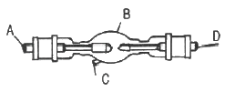
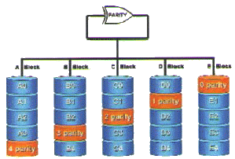
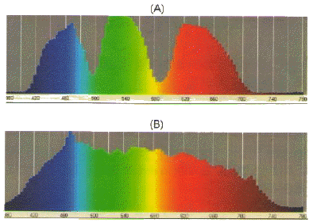
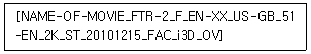
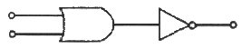
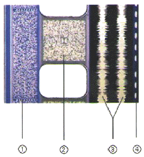
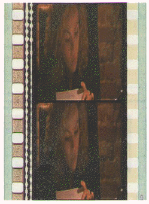
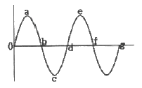
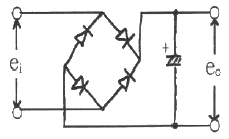

영사기능사 (2012-04-29 기출문제)
1과목: 전기일반
1. 영사용 광원으로 적당하지 않은 것은?
- 형광등
- 크세논 램프
- 카본아크
- 할로겐 전구
(정답률: 알수없음)

2. 35mm 영사 필름의 베이스만의 두께는 약 mm 인가?
- 약 1.00mm
- 약 0.60mm
- 약 0.35mm
- 약 0.13mm
(정답률: 알수없음)
3. 일반 영화 상영관에서 주로 사용하는 표준적인 필름은?
- 4mm 필름
- 8mm 필름
- 35mm 필름
- 120mm 필름
(정답률: 알수없음)
4. 영사용 크세논 광을 광원에 따라 분류할 경우 해당되는 것은?
- 자연광
- 태양광
- 인공광
- 자외선광
(정답률: 알수없음)
5. 영사기에서 집광렌즈(condenser lens)의 역할은?
- 램프의 빛을 한 곳으로 모아 준다.
- 램프의 빛을 확산시켜 준다.
- 램프의 빛을 반사경에 반사시켜 준다.
- 램프의 빛을 감소시켜 초점을 맞추어 준다.
(정답률: 알수없음)
6. 다음 중 영사를 위한 광원의 집광(集光)을 위한 기구가 아닌 것은?
- 집광렌즈(콘덴서)
- 반사경(미러)
- 다우져(douser)
- 반사경 조정핸들
(정답률: 알수없음)
7. 다음 중 정류기 재료가 아닌 것은?
- 실리콘
- 게르마늄
- 셀렌
- 수정
(정답률: 알수없음)
8. 그림에서 크세논 램프의 +측(양극)은 어느 곳인가?

- A
- B
- C
- D
(정답률: 알수없음)
9. 영사기에서 필름을 아파츄어에 밀착시키기 위한 부분은?
- 플라이휘임
- 게이트판
- 스프라켓트
- 핀
(정답률: 알수없음)
10. 일반적으로 영사용 크세논 램프에 공급되는 전류는?
- 직류
- 교류
- 맥류
- 파상류
(정답률: 알수없음)
11. 아래의 그림은 여러 개의 하드 디스크에 일부 중복된 데이터를 나눠서 저장하는 기술인 레이드(Raid)의 연결이다. 알맞은 것은?

- 레이드(Raid) 5
- 레이드(Raid) 4
- 레이드(Raid) 2
- 레이드(Raid) 0
(정답률: 알수없음)
12. 아래의 그림(A)와 (B)는 서로 다른 스펙트럼을 보여주고 있다. 보기의 설명 중 올바른 것은?

- (A)는 필름 영사기의 스펙트럼이다.
- (B)는 디지털 영사기의 스펙트럼이다.
- (A)와 (B)의 스펙트럼은 영사기의 White에 의해서 나타난다.
- (A)와 (B)의 스펙트럼은 영사기의 Black에 의해서 나타난다.
(정답률: 알수없음)
13. 다음 보기와 같은 이름을 가진 디지털시네마 컨텐츠의 화면비는 무엇인가?

- 2D SCOPE
- 2D FLAT
- 3D SCOPE
- 3D FLAT
(정답률: 알수없음)
14. 그림의 게이트와 등가인 게이트의 명칭은?

- NAND
- OR
- NOR
- XOR
(정답률: 알수없음)
15. 1초에 24 프레임(Frame)으로 영사하는 디지털시네마의 영상과 오디오가 1 프레임(Frame) 싱크가 어긋났다면 몇 ms(밀리세컨드)인가?
- 41 ms
- 51 ms
- 31 ms
- 21 ms
(정답률: 알수없음)
2과목: 렌즈 및 광원
16. 3D Digital Projector Calibration을 하기 위한 설명 중 틀린 것은?
- 상영관과 영사실의 불필요한 조명은 끈다.
- 3D 시스템 별로 차이가 있으므로 세부 사항은 각 시스템 규정에 따른다.
- 3D 디스플레이 시스템과 3D 안경을 통해서 측정한 밝기가 4.5 fL 이 될 수 있도록 밝기를 조정한다.
- 3D 시스템과 3D 안경이 없이 측정할 경우 14~18 fL이 되어야 한다.
(정답률: 알수없음)
17. 영사거리가 35m이며 초점거리가 3인치인 렌즈를 사용하였을 경우 화면의 가로의 폭은 얼마인가? (영사창의 가로폭은 25mm 이다.)
- 8.5m
- 10.5m
- 11.5m
- 12.5m
(정답률: 알수없음)
18. 디지털시네마 콘텐츠의 유출방지를 위해 사용되는 키(Key)를 무엇이라 하는가?
- MPEG
- KDM
- JPEG2000
- XYZ
(정답률: 알수없음)
19. 스크린 뒤에 Main Speaker의 후면으로부터의 음과 스크린에서 반사된 음의 간섭이 없도록 공간을 완전한 흡음 처리 구조로 설계하는 것을 무엇이라 하는가?
- 배플(Baffle)
- 플러터 에코(Flutter Echo)
- 차음
- 잔향
(정답률: 알수없음)
20. 디지털시네마의 DCP 배급 형태는 외장형 하드를 사용한다. DCP가 지원하지 않는 외장형 하드디스크의 파티션은 무엇인가?
- Ext2
- Ext3
- NTFS
- HFS
(정답률: 알수없음)
21. 디지털시네마에서 말하는 4K의 화면 해상도는 다음 중 어느 것인가?
- 1920×720
- 1920×1080
- 2048×1920
- 4096×2160
(정답률: 알수없음)
22. 10진수 13을 2진수로 변환하면?
- 1010
- 1011
- 1101
- 1110
(정답률: 알수없음)
23. 디지털 신호처리 방식에서 아날로그 출력회로와 가장 가까이 있는 회로는?
- A/D 변환회로
- CPU
- 메모리회로
- D/A 변환회로
(정답률: 알수없음)
24. 제트 여객기와 3m 거리에서의 소리, 대포의 발사 소리 등 사람의 귀가 아플 정도의 가청 한계는 몇 db인가?
- 120 db
- 130 db
- 140 db
- 150 db
(정답률: 알수없음)
25. 다음은 35mm 필름의 사운드트랙 사진이다. 사진의 2번에 해당하는 음향포맷은 무엇인가?

- SRD
- DTS
- SDDS
- A-Type Sterei\o
(정답률: 알수없음)
26. 공기중의 파동인 음파를 받아서 이것을 전기적인 신호로 바꾸어 주는 기기는 무엇인가?
- 마이크로폰
- 스피커
- 앰프
- 콘솔
(정답률: 알수없음)
27. 다음 보기 중 Dolby 5.1channel surround system에서 0.1채널 서브 우퍼의 주파수 재생 대역은?
- 20~20,000Hz
- 350~1,600Hz
- 100~500Hz
- 20~150Hz
(정답률: 알수없음)
28. 빛들이 조합될 때 각 스펙트럼의 성분들이 더해지는 것을 색수가 많을수록 명도가 높아지고 밝아지는 것을 무엇이라 하는가?
- 가산혼합
- 감산혼합
- 감색혼합
- 감법혼색
(정답률: 알수없음)
29. 다음 보기 중에서 멀리 있는 음원을 녹음 하는데 적절하게 쓰일 수 있는 마이크는?
- 무지향성 마이크
- 다이나믹 마이크
- 양지향성 마이크
- 파라볼라 마이크
(정답률: 알수없음)
30. 어떤 물체에 입사된 음이 여러 방향으로 반사되는 현상을 무엇이라고 하는가?
- 흡음
- 산란
- 굴절
- 회절
(정답률: 알수없음)
3과목: 증폭기 및 녹음재생
31. 시네마스코프용 스크린(Screen)의 크기에 대한 설명으로 옳은 것은?
- 세로를 가로치수의 2.35배로 한다.
- 가로를 세로치수의 2.35배로 한다.
- 세로를 가로치수의 1.35배로 한다.
- 가로를 세로치수의 1.35배로 한다.
(정답률: 알수없음)
32. 필름이 사운드드럼에 밀착되지 않아 슬리트 렌즈에 초점이 모아지지 않으면 어떤 현상이 일어나는가?
- 스크린에 흐린 영상이 나타난다.
- 소리가 불규칙하게 커졌다 작아졌다 한다.
- 소리가 불분명하고 작아진다.
- 소리가 전혀나지 않는다.
(정답률: 알수없음)
33. DLP 프로젝터가 점차적으로 상용화되어져 가는 시점에서 필름을 대신하는 부품은?
- DMD Chip
- Security
- Digital cinema packaging data
- Metadata
(정답률: 알수없음)
34. 다음 보기 중 사운드헤드에 속하지 않는 것은?
- 플라이 휠
- 텐션롤러
- 정속 스프로켓
- 인터 스프로켓
(정답률: 알수없음)
35. 다음 중 영화관의 음향재생 방식이 아닌 것은?
- 옵티컬(potical) 재생방식
- 아날로그(Analog) 재생방식
- 디지털(Digital) 재생방식
- 다이나믹(Dynamic) 재생방식
(정답률: 알수없음)
36. 둥근판형, 둥근뿔형, 둥근통형 이란 단어는 무엇을 뜻하는가?
- 램프 하우스 종류
- 영사 셔터의 형식
- 방화 셔터의 형식
- 사운드 드럼의 형식
(정답률: 알수없음)
37. 다음 중 필름트랩을 냉각시키는 방법이 아닌 것은?
- 방열방지
- 오일냉각장치
- 수냉장치
- 송풍장치
(정답률: 알수없음)
38. 영화관 스크린에 구멍이 뚫려져 있는 이유는 무엇 때문인가?
- 반사된 빛이 강하여 줄이기 위해
- 스크린이 무거워서
- 파장이 짧은 고음의 감쇠를 막기 위해
- Screen과 Speaker의 공명을 없애기 위해
(정답률: 알수없음)
39. 교류전력에서 직류전력을 얻기 위해 정류작용에 중점을 두고 만들어진 전기적인 회로소자 또는 장치를 무엇이라 하는가?
- 정류기
- 전동기
- 실리콘
- 반도체
(정답률: 알수없음)
40. 다음 그림은 35mm 필름 중 일부분이다. 그림의 화면비는 무엇인가?

- 스탠다드
- 비스타비젼
- 시네마스코프
- 플랫
(정답률: 알수없음)
41. 0.47[㎌], 0.1[㎌] 2개의 커패시터를 병렬로 접속할 때 합성용량은 얼마인가?
- 0.47[㎌]
- 0.1[㎌]
- 82[㎌]
- 0.57[㎌]
(정답률: 알수없음)
42. 그림에 보인 파형의 주기범위로 옳은 것은?

- 0~b
- 0~c
- 0~d
- 0~g
(정답률: 알수없음)
43. 100[V]의 전압에서 2[A]의 전류가 흐르는 전열기를 10시간 사용하엿다. 소비전력량은 몇 [kWh]인가?
- 1 [kWh]
- 2 [kWh]
- 20 [kWh]
- 200 [kWh]
(정답률: 알수없음)
44. 피상전력이 50[KVA], 유효전력이 40[W]인 부하의 역률은?
- 75[%]
- 80[%]
- 85[%]
- 90[%]
(정답률: 알수없음)
45. 다음 중 교류회로에서 무효전력이 0인 부하는?
- 저항만의 부하
- 유효 리액턴스만의 부하
- 용량 리액턴스만의 부하
- 유도 리액턴스와 용량 리액턴스가 결합된 부하
(정답률: 알수없음)
4과목: 영사기와 필름의 구조원리
46. 한 가정에서 100[V], 800[W]의 전열기에 흐르는 전류가 8[A]라 함은 어떠한 값을 나타낸 것인가?
- 평균값
- 최대값
- 순시값
- 실효값
(정답률: 알수없음)
47. 정격전압 100[V], 100[W]짜리 전구에 교류전압을 가할 때 전압과 전류의 위상 관계는?
- 전압이 전류보다 90° 앞선다.
- 전압과 전류는 동위상이다.
- 전류가 전압보다 90° 앞선다.
- 전압이 전류보다 45° 만큼 앞선다.
(정답률: 알수없음)
48. 전동기의 회전 방향을 알기 위한 법칙은?
- 렌츠의 법칙
- 플레밍의 오른속 법칙
- 플레밍의 왼속 법칙
- 앙페르의 오른 나사 법칙
(정답률: 알수없음)
49. 어떤 물질의 저항값에 대한 설명으로 옳은 것은?
- 저항체의 길이에 비례하고 단면적에 반비례한다.
- 저항체의 단면적에 비례하고 길이에 반비례한다.
- 저항체의 길이와 단면적에 비례한다.
- 저항체의 길이와 단면적에 반비례한다.
(정답률: 알수없음)
50. 아래 그림은 무슨 회로인가?

- 브릿지 정류 회로
- 전파 배전압 정류 회로
- 반파 정류 회로
- 전파 정류 회로
(정답률: 알수없음)
51. 영사시 스크린에 선명한 화면이 만들어졌을 때 영사렌즈의 초점거리란?
- 영사창의 필름에서 렌즈중심까지의 거리를 뜻한다.
- 광원에서 스크린까지의 거리를 뜻한다.
- 광원에서 렌즈까지의 거리를 뜻한다.
- 영사창에서 스크린까지의 거리를 뜻한다.
(정답률: 알수없음)
52. 프리앰프(free-amp)의 기능이 아닌 것은?
- 이퀄라이져
- 입력셀렉터
- 전력증폭
- 음질조절
(정답률: 알수없음)
53. 다음 중 도체는?
- 운모
- 구리
- 질소
- 비닐
(정답률: 알수없음)
54. 크세논 램프 교체시 주의 사항이 아닌 것은?
- 램프의 전원 공급 단자를 정확히 결선한다.
- 손으로 석영관 면을 만지지 않는다.
- 보호 장구를 착용한다.
- 전원이 인가된 상태에서 교체한다.
(정답률: 알수없음)
55. 아나모픽 렌즈란?
- 가로로 압축된 왜곡된 이미지를 스크린에 투사시 원래의 비율에 맞게 가로크기를 늘려 투사하는 렌즈
- 아이맥스용 렌즈
- 스크린에 투영되는 화면의 가로 크기를 줄이는 렌즈
- 스크린에 투사되는 화면의 밝기를 증가 시키는 렌즈
(정답률: 알수없음)
56. 2개 또는 그 이상의 스피커에서 소리가 마주치면 일어나는 소리의 성질은 무엇인가?
- 회절
- 반사
- 굴절
- 간섭
(정답률: 알수없음)
57. 사람의 청각 주파수(가청주파수) 가운데 가장 높은 주파수[KHz]는?
- 10
- 20
- 30
- 40
(정답률: 알수없음)
58. 다음 중 오목렌즈에 의하여 생기는 상에 대한 설명 중 옳지 않는 것은?
- 상의 위치는 물체와 같은 쪽에 있다.
- 상의 크기는 물체보다 작다.
- 상의 모양은 도립이다.
- 항상 허상만 생긴다.
(정답률: 알수없음)
59. 2[C]의 정전하가 +10[V]의 전압을 가지고 있다면 이 전하의 에너지는 얼마인가?
- 10[J]
- 100[J]
- 20[J]
- 200[J]
(정답률: 알수없음)
60. 전기를 한쪽방향으로만 흐르게 하는 부품의 명칭은?
- 저항
- 콘덴서
- 트랜지스터
- 다이오드
(정답률: 알수없음)